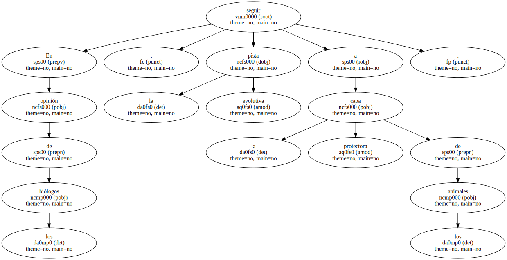
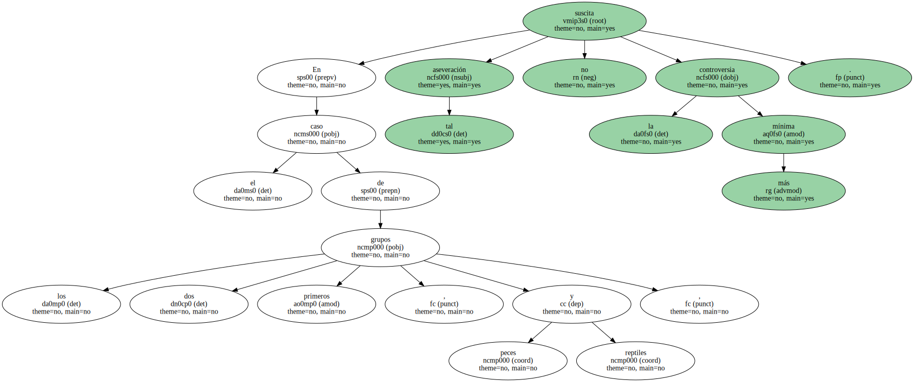
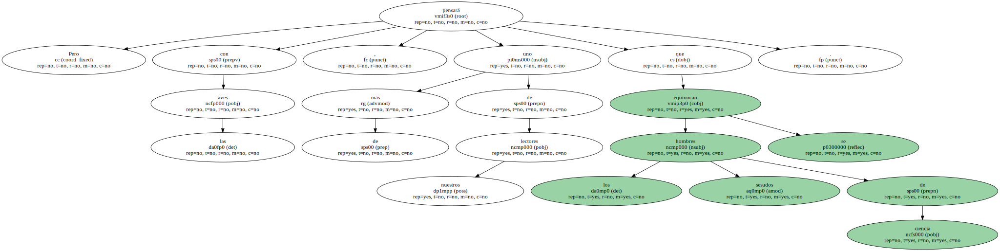
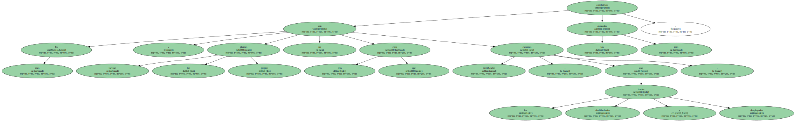
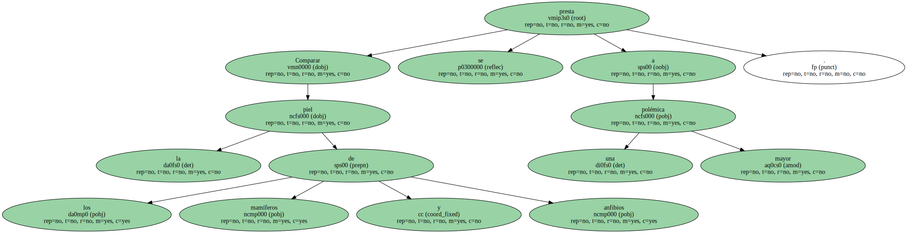

En opinión de los biólogos , seguir la pista evolutiva a la capa protectora de los animales.
Para muchos de ellos , una de las primeras formas de piel tuvo que ser algo así como una sencillísima membrana , resultante del endurecimiento de la sustancia celular , el citoplasma , expuesta a la acción del aire y el oxígeno.
Más tarde esa membrana se transformaría en coraza quitinosa o en caparazón calcáreo , semejantes a los que presentan , respectivamente , diferentes tipos de insectos y moluscos.
En cualquier caso , según continúan asegurando los científicos , la secuencia evolutiva de la piel de los animales pasa claramente de los peces a los reptiles y llega posteriormente a las aves.

Porque , pese a sus variadas formas , todos estos animales tienen su piel conformada por escamas.
En el caso de los dos primeros grupos , peces y reptiles , tal aseveración no suscita la más mínima controversia.
Pero con las aves , más de uno de nuestros lectores pensará que los sesudos hombres de ciencia se equivocan.
Ellos entonces nos invitarán a observar sus patas , donde , en efecto , existen escamas claramente conformadas.
Es más , incluso las propias plumas no son otra cosa que escamas modificadas , con los bordes deshilachados y desplegados , concluirían los más avezados.
Comparar la piel de los mamíferos y anfibios se presta a una mayor polémica.
